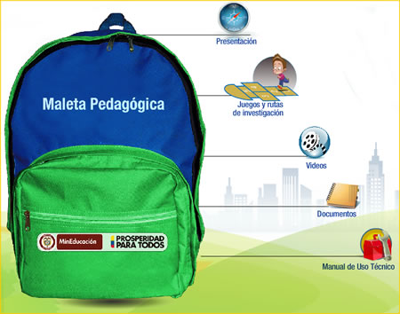
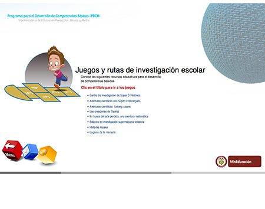
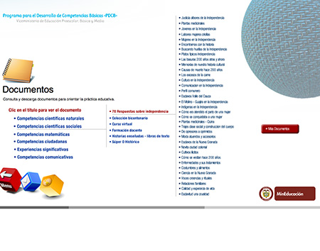
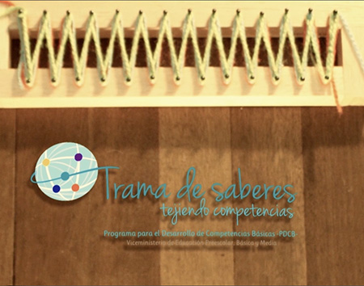

Maleta Pedagógica para el Desarrollo de Competencias Básicas
Contiene una colección de documentos y recursos educativos dirigidos a docentes y estudiantes, que además de proporcionar herramientas de orden pedagógico y didáctico, favorecen la reflexión en torno a la práctica educativa y a lo que significa el desarrollo de competencias básicas desde la escuela.
www.colombiaaprende.edu.co/html/micrositios/1752/w3-propertyname-3038.html




◄ Deslice las imágenes con el dedo ►